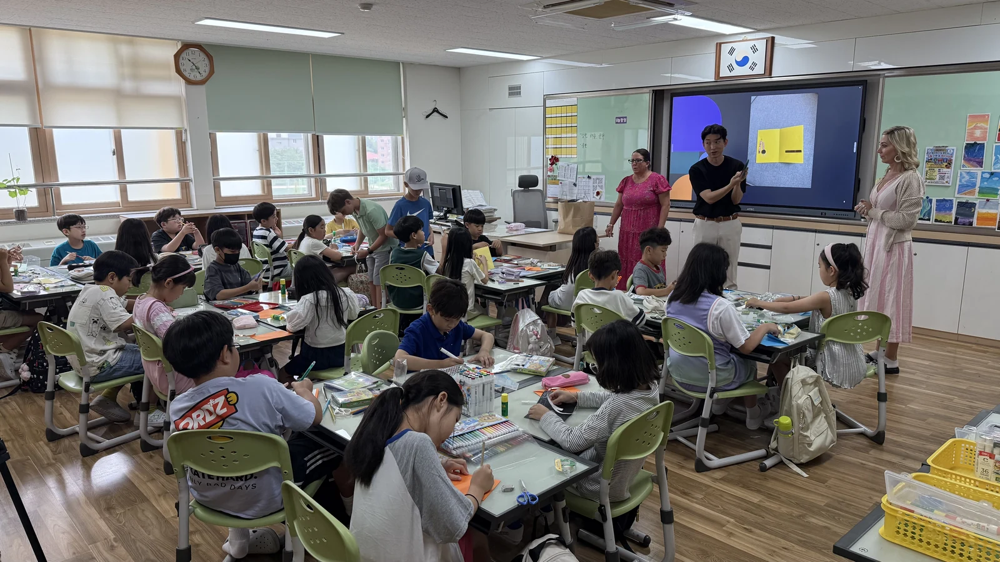

2026
학교 교류와 교육 프로그램 협약
학교 교류
미국 학생들과 함께한 솔밭초등학교 교류
솔밭초등학교 3학년 세 학급에서 사회정서학습(SEL)과 Learning Upgrade 영어 활동이 진행됐습니다.

교육 프로그램 협약 · 6월
폭스커넥트–Learning Upgrade
교육 프로그램 협약
폭스커넥트와 Learning Upgrade는 영어교육·디지털 학습 프로그램의 국내 보급과 교육 지원을 위한 업무협약을 맺었습니다.

교육 교류 협약 · 6월 19일
호수돈여자중학교–Grow X Education–Learning Upgrade LLC
한국·미국 간 교육교류와 사회정서학습·영어·디지털 학습 분야의 협력을 위한 업무협약을 맺었습니다.